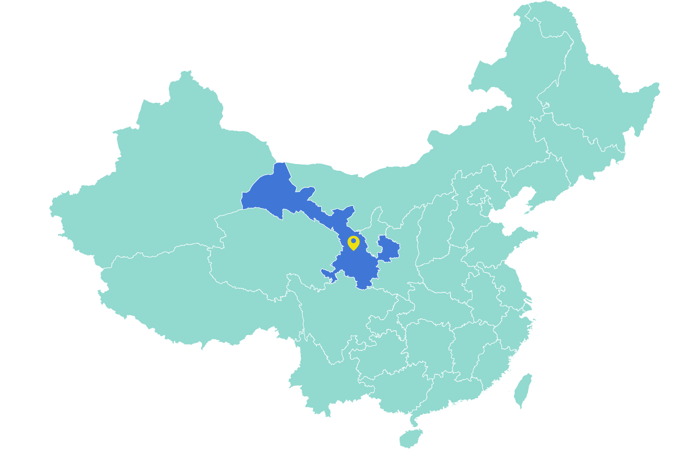
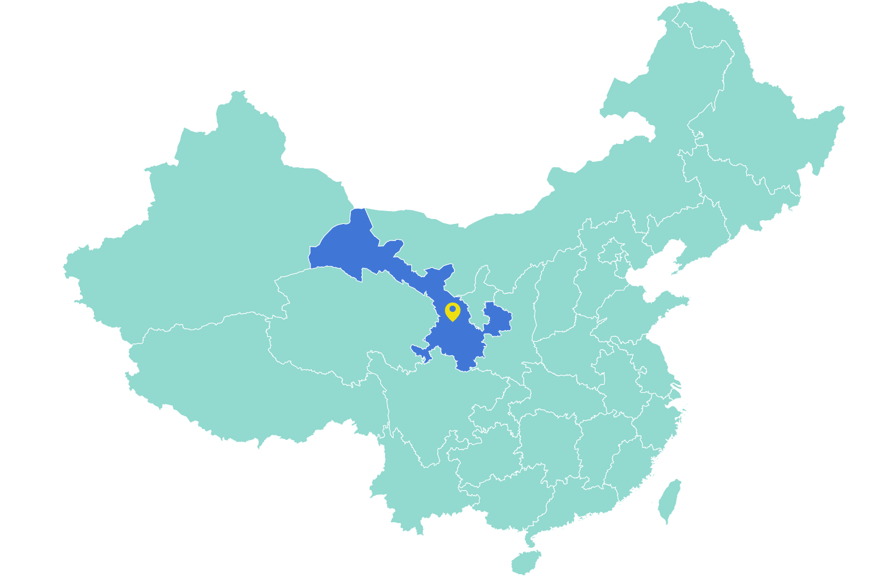

Home > Venue
Venue
The workshop will be held in Institute of Modern Physics (IMP) Chinese Academy of Sciences (CAS).
Lanzhou, city, capital of Gansu province, west-central China. It is situated in the southeastern portion of the province on the upper course of the Huang He (Yellow River), where the river emerges from the mountains. Lanzhou has been a centre since early times, being at the southern end of the route leading via the Gansu (Hexi) Corridor across Central Asia; it also commands the approaches to the ancient capital area of Chang'an (modern Xi'an) in Shaanxi province from both the west and the northwest, as well as from the area of Koko Nor (Qinghai Hu) via the upper waters of the Huang He and its tributaries. Pop. (2002 est.) city, 1,576,446; (2007 est.) urban agglom., 2,561,000.

IMPCAS is located downtown in Lanzhou.
Address: No. 509, Nanchang Road, Chengguan District, Lanzhou, Gansu Province, China.
Lanzhou, city, capital of Gansu province, west-central China. It is situated in the southeastern portion of the province on the upper course of the Huang He (Yellow River), where the river emerges from the mountains. Lanzhou has been a centre since early times, being at the southern end of the route leading via the Gansu (Hexi) Corridor across Central Asia; it also commands the approaches to the ancient capital area of Chang'an (modern Xi'an) in Shaanxi province from both the west and the northwest, as well as from the area of Koko Nor (Qinghai Hu) via the upper waters of the Huang He and its tributaries. Pop. (2002 est.) city, 1,576,446; (2007 est.) urban agglom., 2,561,000.

IMPCAS is located downtown in Lanzhou.
Address: No. 509, Nanchang Road, Chengguan District, Lanzhou, Gansu Province, China.